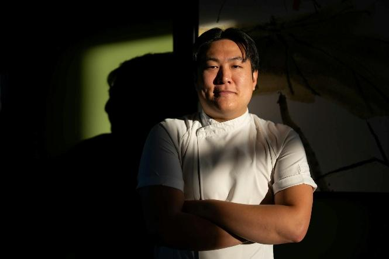
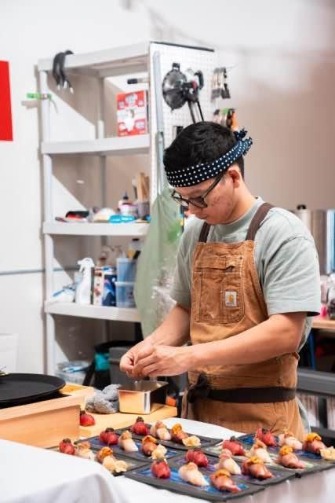
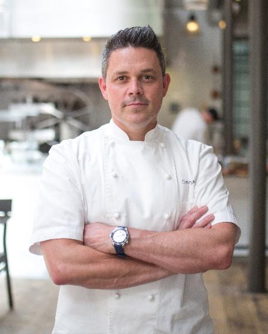
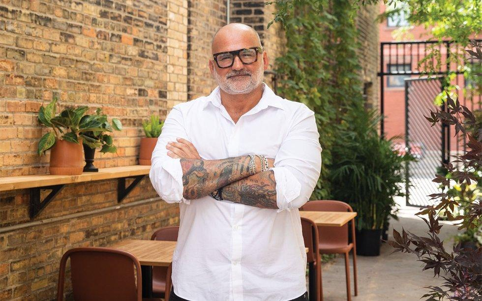
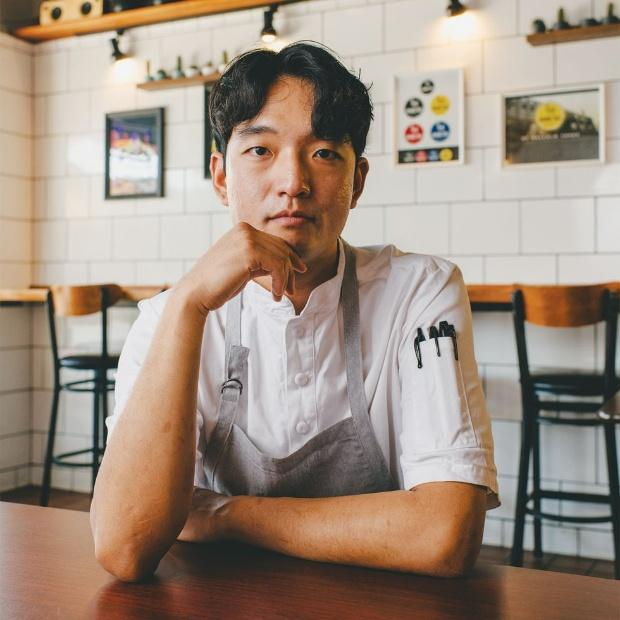
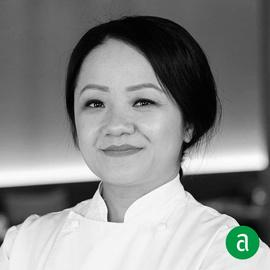
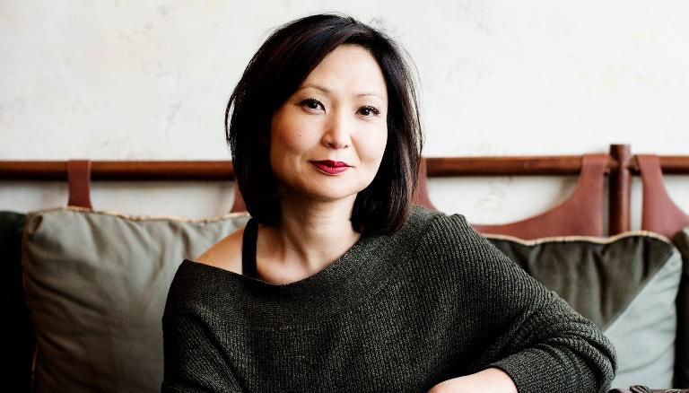
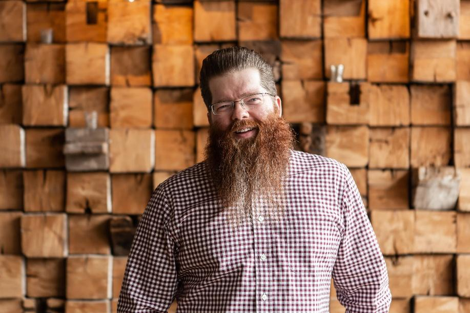
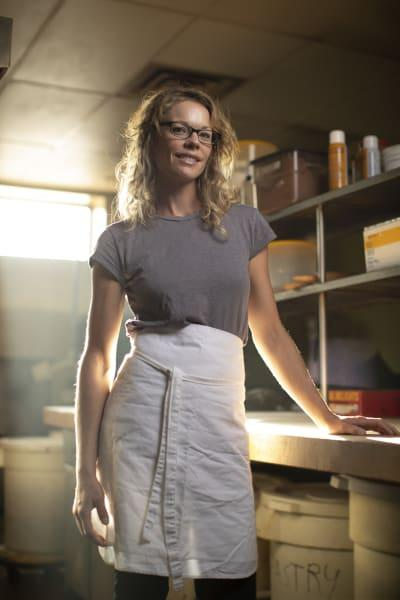
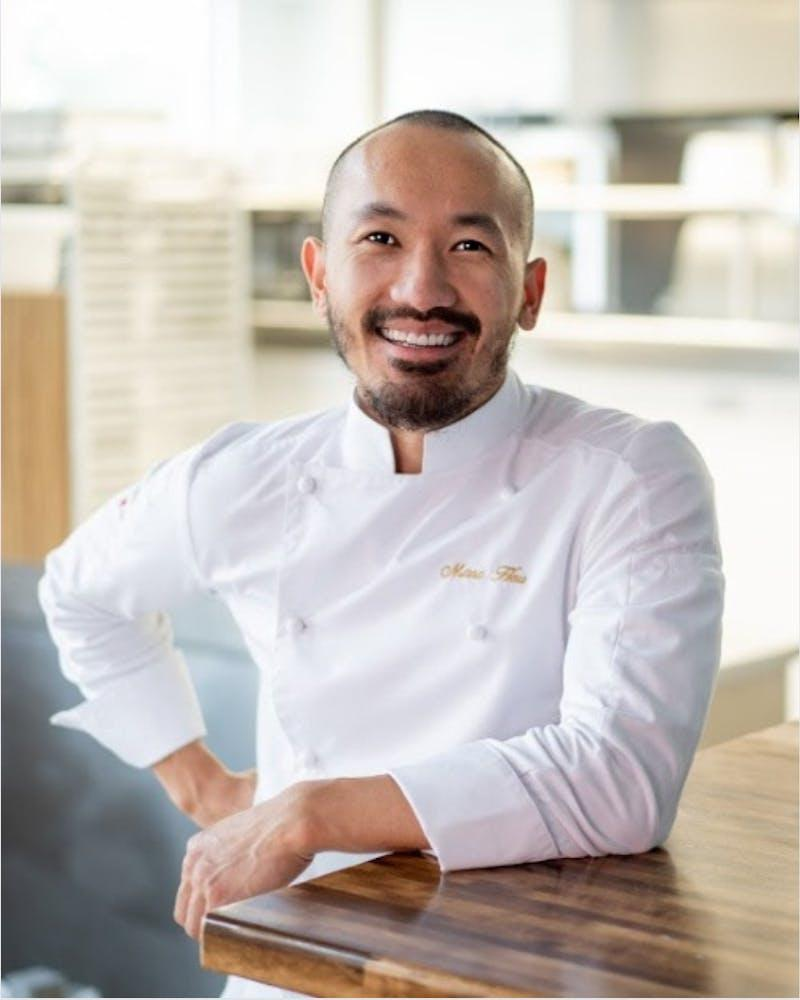

PLATES & PLAYMAKERS · JULY 9, 2026
THE PLAYMAKERS
12 culinary visionaries · One unforgettable night · One extraordinary cause
PLATES & PLAYMAKERS · JULY 9, 2026
12 culinary visionaries · One unforgettable night · One extraordinary cause
We brought together twelve of the Twin Cities' most celebrated chefs — James Beard Award winners, nominees, and the kind of quietly legendary figures who define a city's culinary identity. Each of them said yes to this cause without hesitation. On July 9, they'll cook for families who need it most.

01Khue's Kitchen
Born in Vietnam and raised in Minneapolis, Eric Pham's cooking is a love letter to his roots. Khue's Kitchen — named for his mother — blends classical Vietnamese technique with the bold, unpretentious spirit of the Twin Cities. A community anchor and a local legend, his pho has made pilgrims of food lovers from across the Midwest.
VISIT KHUE'S KITCHEN →
02Sushi by Baaska
Few chefs command the reverence that Baaska does. His omakase experience is an intimate, precise ritual — each piece a meditation on texture, temperature, and restraint. Trained under masters in Tokyo and New York, Baaska brings world-class Japanese craftsmanship to the heart of Minnesota, one exquisite bite at a time.
VISIT SUSHI BY BAASKA →
03Bellecour & Mara
A multiple James Beard Award winner and Bocuse d'Or competitor, Kaysen built his culinary empire in Minneapolis after stints at some of the world's most celebrated kitchens. Bellecour and Mara stand as monuments to his craft — French-rooted, warm-souled, and deeply human. His presence at Plates & Playmakers is a gift to the cause.
VISIT BELLECOUR →
04Porzana
James Beard nominee Daniel Del Prado runs one of the most electric dining rooms in the city. His kitchen at Porzana pulses with bold, unapologetic energy — the flavors vivid, the technique sharp, the hospitality disarming. Del Prado is the rare chef who makes every guest feel like the most important person in the room.
VISIT PORZANA →
05Abang Yoli
Jamie Yoo is one of the Twin Cities' brightest rising stars. Her Malaysian street food roots inform every dish at Abang Yoli — from the crackling satay to the fire-kissed noodles that have won her a devoted following. Yoo's food is loud, joyful, and completely original, channeling the hawker stalls of Penang with Midwestern heart.
VISIT ABANG YOLI →Bûcheron
Adam Ritter's Bûcheron made national headlines when it was named the James Beard Foundation's Best New Restaurant in America for 2025 — a staggering achievement for a restaurant still finding its footing. Ritter's approach is cerebral but deeply satisfying: carefully sourced, elegantly composed, driven by a near-philosophical obsession with flavor clarity.
VISIT BÛCHERON →
07Diane's Place
Diane Moua is a poet in pastry. A James Beard finalist celebrated for her singular approach to Hmong heritage and French technique, Moua creates desserts that are intellectually rigorous and profoundly personal. Each bite is a story — of memory, of migration, of pride — rendered in sugar, cream, and the finest seasonal ingredients Minnesota has to offer.
VISIT DIANE'S PLACE →Mucci's
Tim Niver has spent years making the case that Italian-American comfort food is its own high art. As a multiple James Beard semifinalist and the heart behind Mucci's beloved dining room, Niver understands that hospitality isn't just about what's on the plate — it's about how the whole room makes you feel. Warm, honest, and endlessly generous.
VISIT MUCCI'S →
09Pizzeria Lola
Ann Kim changed the way America thinks about pizza. A James Beard Award winner and the subject of a stunning Netflix Chef's Table episode, Kim's Pizzeria Lola helped cement Minneapolis as a world-class dining city. Her pies are a revelation: wood-fired, boundary-pushing, and utterly Minnesotan in their roots-run-deep ethos.
VISIT PIZZERIA LOLA →
10Parlour
Mike DeCamp makes what many consider the finest burger in America. His Parlour double smash has been hailed in Bon Appétit, the New York Times, and beyond, yet DeCamp remains grounded in the neighborhood. A James Beard semifinalist with range that extends far beyond that legendary patty — though the patty alone is worth the trip.
VISIT PARLOUR →
11Black Walnut Bakery
Sarah Botcher's Black Walnut Bakery is a quiet marvel. A James Beard semifinalist known for her obsessive attention to fermentation, grain sourcing, and lamination technique, Botcher has built one of the most respected bread and pastry operations in the Midwest. Her work is slow, intentional, and completely extraordinary — the kind of baking that reminds you what flour and time can become.
VISIT BLACK WALNUT BAKERY →
12Marc Heu Patisserie
Marc Heu is the master of classical French pastry in the American Midwest. James Beard-recognized and classically trained, Heu's patisserie serves croissants, entremets, and tarts of staggering beauty and precision. His work represents the highest expression of the form — where geometry, flavor, and texture unite in perfect, fleeting harmony.
VISIT MARC HEU PATISSERIE →